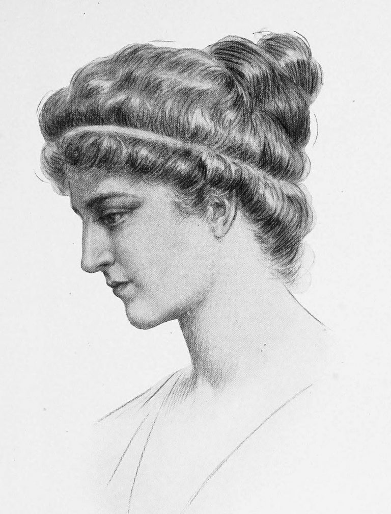
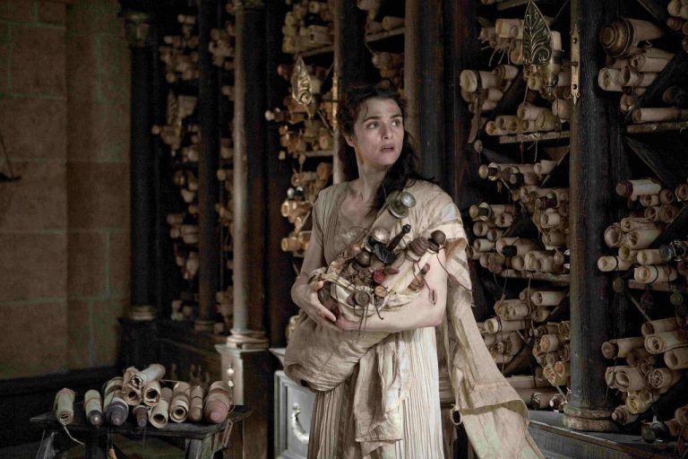
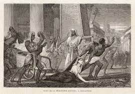

Tanrılardan Ateşi Çalacağız!
Anasayfa |
Özgür Kadın Hypatia |
Hypatia’nın Vahşice Öldürülmesi|
İletişim
Antik Dünyanın Son Bilim İnsanı İskenderiyeli Hypatia Kimdir?
Hypatia’nın Vahşice Öldürülmesi

Artan bir vahşetle karşı karşıya kalan Hypatia, Orestes’e destek verdi. Uzun süredir Hypatia’yı popülaritesi ve etkisinden dolayı kıskanan Cyril, ona kara büyü yaptığına dair söylentiler yayarak karşılık verdi. Onu ”tüm zamanını büyüye, usturlaplara ve müzik aletlerine adayan bir büyücü” olmakla suçladı. Suçlamalar her ne kadar saçma sapan olsa da, Cyril’in taraftarları üzerinde istenen etkiyi yaratmıştı. M.S. 415 yılında Hristiyan halk Hypatia’ya saldırdı. Bir akşam iki tekerlekli arabasında oturmuş evine doğru giderken önüne çıktılar. Öfkeli bağnazlar onu arabadan çekip almış, filozof giysilerini zorla üzerinden çıkarmış ve yakınlardaki kiliseye götürünceye kadar sokaklar boyunca sürüklemişlerdi.

Kilise, bir zamanlar Kleopatra tarafından sevgilisi Mark Antony için yaptırılmış bir tapınak olan Sezaryum’du ve imparatorluğun yeni dini nedeniyle kiliseye çevrilmişti. Onu yakalayıp sokaklar boyunca sürüklemiş olan kişiler, Hypatia’yı Hristiyan kilisesinin içindeki sahanlığın zeminine fırlatıp, kırık kiremit ve çömlek parçalanyla öldüresiye dövdüler. Sonunda öldüğünde bedenini parçalara ayırıp şehir duvarlarının dışına taşıdılar ve orada bir şenlik ateşinin üstünde yaktılar.

Bu kendi zamanındaki en parlak dâhilerden biri olabilecek bir kadın için acımasız ve trajik bir sondu. Hypatia’nın ölümünü klasik dönemin sonu olarak gören pek çok tarihçi var. Onunkisi aklın altın çağının sonunu haber veren bir ölümdü. Katledilişinin ardından Hristiyan Kilisesi, olayı örtbas etmek için nafile bir çabayla yazılı tüm eserlerini yok ederek işlenmiş olan bu suçu gizlemeye çalıştı. Günümüze kadar gelebilmiş hiçbir çalışması yok ve elimizde sadece dehasına tanıklık eden öğrencilerinden almış olduğu mektuplar ve tarihi kayıtlar var. Hypatia’nın belki de en büyük mirası kendisinden öğrencilerine geçmiş olan sözleridir: ”Düşünme hakkınızı koruyun, yanlış düşünmek bile hiç düşünmemekten iyidir.”
Ayrıca Hypatia’nın hayatını anlatan 2009 yapımı ”Agora” filmini de mutlaka izlemenizi tavsiye ederiz.
Kaynakça